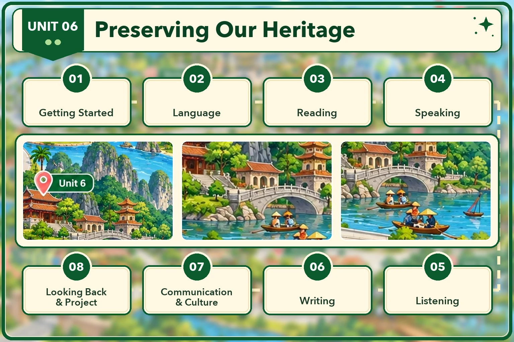

Lesson 1 · Getting started — Heritage sites in Viet Nam Lesson 2 · Language Lesson 3 · Reading: An ideas competition Lesson 4 · Speaking: Ways to preserve cultural heritage Lesson 5 · Listening: A tour guide's talk about Trang An Scenic Landscape Complex Lesson 6 · Writing: A leaflet about preserving Trang An Lesson 7 · Communication and Culture: Initiatives to preserve heritage around the world Lesson 8 · Looking back and Project: Ways to preserve a type of heritageĐã dựng: Lesson 1, 2, 3, 4, 5, 6, 7, 8. Đủ cả 8 tiết. Dựng xong tiết nào thì mở khoá thẻ đó.